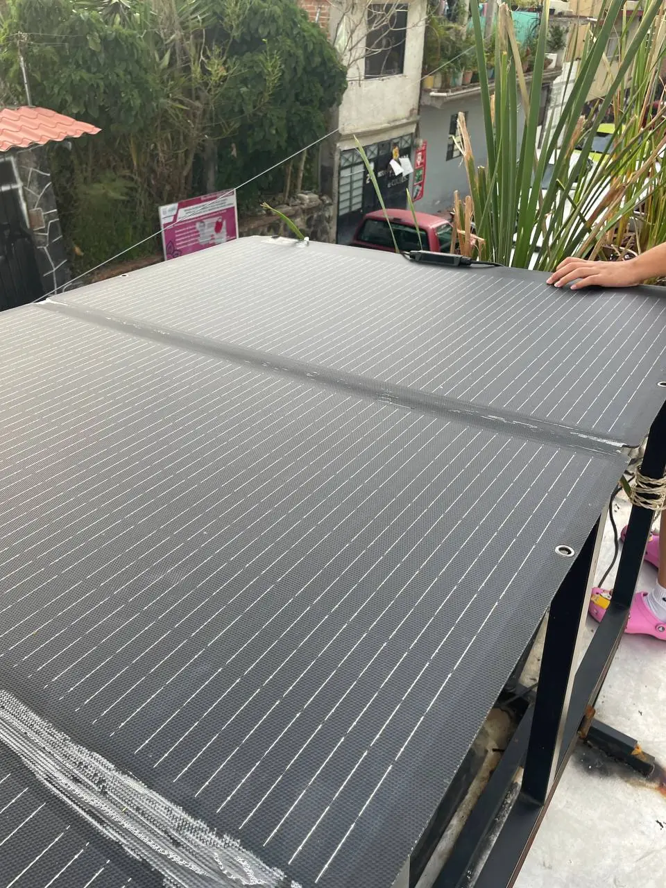
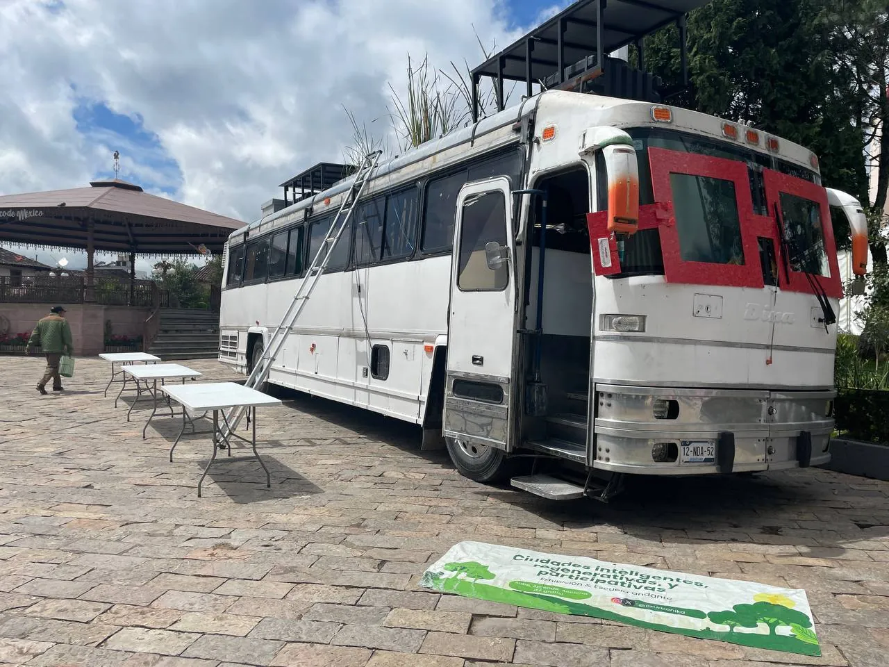
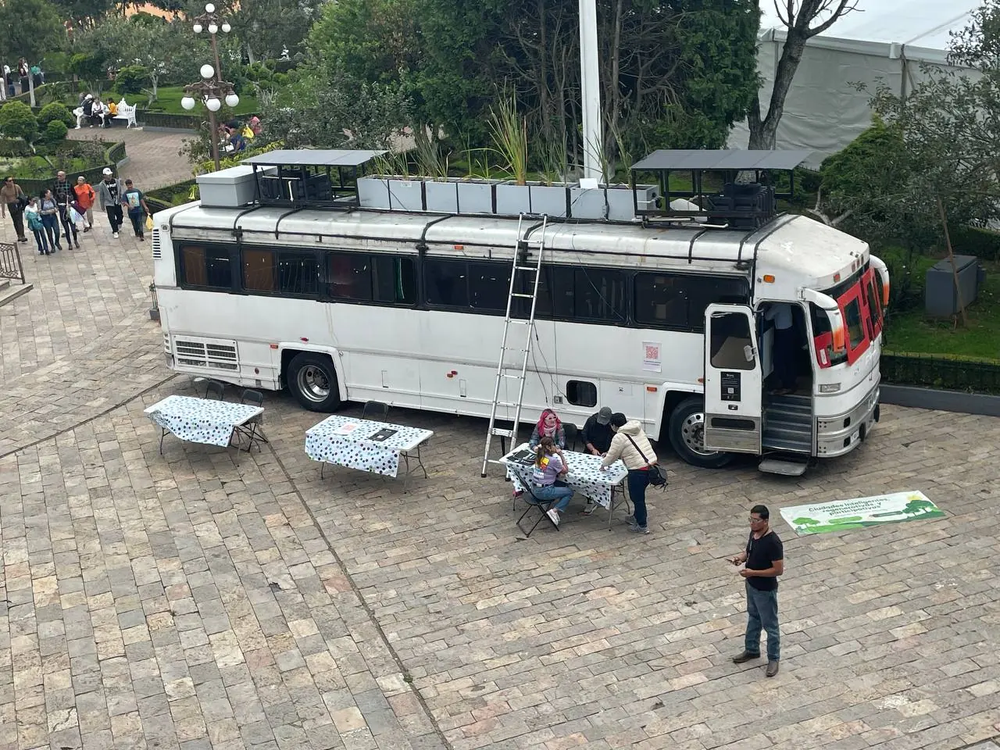
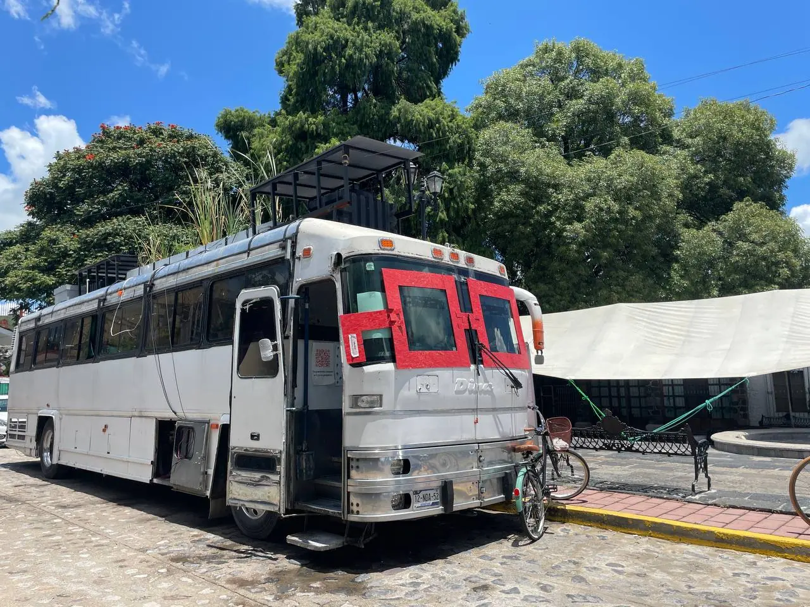

30%
Para 2030, el 30% de todas las transacciones globales serán de la economía agéntica (por agentes de IA).
Programa de innovación aplicada · Xalapa
(IMCO, 2026; PwC, 2026)
¿De qué lado quieres estar?
En Xalapa hay un laboratorio andante que enseña a construir con IA: un bus con soberanía hídrica, eléctrica y de gestión de residuos. Es mi oficina. Ven a aprender a usarla.
01 · El problema
La IA generativa hoy se consume, no se construye.
Las buenas ideas se quedan en la libreta. Las soluciones de ciudad suelen llegar impuestas, no co-diseñadas.
La crisis hídrica, energética y de residuos es un problema de diseño, no de escasez.
Este bus existe para cerrar esa brecha: aquí la IA se construye con guía y con propósito.
02 · La tendencia del empleo
Cada vez hay menos oferta laboral para recién egresados y cada vez hay más desplazamiento de estas labores por IA y otras tecnologías.
Paradoja de las vacantes (PwC, 2026). Las vacantes júnior se «seniorizan»: las ofertas con habilidades avanzadas de IA se duplican y son 7× más probables de pedir estrategia, arquitectura o liderazgo. Las empresas elevan la productividad del personal senior en lugar de abrir plazas júnior.
Marco global (Stanford Digital Economy Lab y ADP Research, 2026). Brecha de empleo de 19% en profesionales de 22 a 25 años en sectores altamente automatizados. El ajuste ocurre por congelamiento de contratación, no por despidos masivos.
03 · Deuda cognitiva
Hasta −55% de conectividad en quienes delegaron tareas completas al LLM.
83.3% de los participantes no pudo citar una sola frase del texto que acababa de generar.
Correlación negativa entre uso frecuente de IA y pensamiento crítico (n=666), mediada por cognitive offloading.
El efecto es más severo en jóvenes de 17–25 años, justamente la población que entra a la rampa de empleo.
Fuente: Societies 15(1), 2025.
La IA debe aumentar las capacidades humanas y del planeta, no reducirlas.
04 · La oportunidad, economía agéntica
El volumen de mercado que se abre cuando se aprende a construir con IA.
30%
Para 2030, el 30% de todas las transacciones globales serán de la economía agéntica (por agentes de IA).
05 · El bus: mi oficina
Un bus adaptado como laboratorio de innovación aplicada: ecotecnias funcionando, herramientas de IA y espacio para talleres, conferencias y consultoría. La gente viene al bus a recibir talleres, conferencias y consultoría; también lo contrato para proyectos.

Un bus convertido en laboratorio de ecotecnias e IA: la tecnología funciona en tiempo real, frente a quien visita.


Ecotecnias demostrables
06 · Portafolio de innovación aplicada
Agua
ProblemaEscasez y mala calidad del agua en las casas.
TecnologíaBiofiltros de aguas grises tratadas a nivel de beber, libres de químicos, bajo mantenimiento.
ResultadoAgua segura en el hogar sin red de distribución nueva.
Energía
ProblemaResiduos orgánicos sin destino productivo.
TecnologíaBioconversión con larva de mosca soldado negra (residuo orgánico → fertilizante, harina hiperproteica y biocombustible).
ResultadoResiduo que se vuelve materia prima y energía.
Alimentación y vivienda regenerativa
ProblemaAlimentos de distancia creciente y vivienda no regenerativa.
TecnologíaHuertos con asociación de cultivos y verticales automatizados; bioconstrucción con adobe, pieles vegetales y materiales reciclados; electrodomésticos eficientes (NOM/ISO).
ResultadoComida de cerca y casas que regresan más de lo que toman.
Ciudad inteligente y gobernanza digital
ProblemaGobiernos sin herramientas para decidir con la ciudadanía.
TecnologíaDecidim / Consul / GoVocal; agentes de IA para atención ciudadana, análisis y simulación; semáforos y cámaras con IA, gemelos digitales, drones, satélites, RV/RM; blockchain — certificación de propiedad intelectual con chips NFC, recaudación internacional con cripto; módulo de incubación/aceleración e impacto; módulo de consultoría (diagnóstico, piloto, hoja de ruta, certificación).
ResultadoDecisiones públicas co-diseñadas y trazables.
07 · Casos y evidencia
Zacatlán de las Manzanas
+500 personas, incluida la presidenta municipal y su Cabildo.
UP Metropolitana de Puebla
200 universitarios + 30 niños.
San Andrés Cholula
Funcionarios estatales/municipales, empresarios, activistas y ciudadanos.
Atlixco
15 medios en rueda de prensa · ~400 participantes en tres días.
UAM Cuajimalpa · IPN · UNAM CU
Sedes universitarias con la ruta activa.
Evidencia: la ruta 2025-2026


Cobertura en Instagram
08 · Instructor y trayectoria

El Mtro. Humberto Besso-Oberto Huerta es inventor, investigador, emprendedor y filántropo enfocado en impacto positivo.
La diversidad de industrias y roles le permite coordinar equipos cruzando zonas horarias y con tecnologías de frontera.
Imagen «Ex Alumno del Mes» (pendiente: la entregará el dueño del sitio).
09 · Cómo participar

10 · Fuentes
Cifras de empleo 2025-2026 sujetas a proyección; se actualizan con cada publicación oficial.